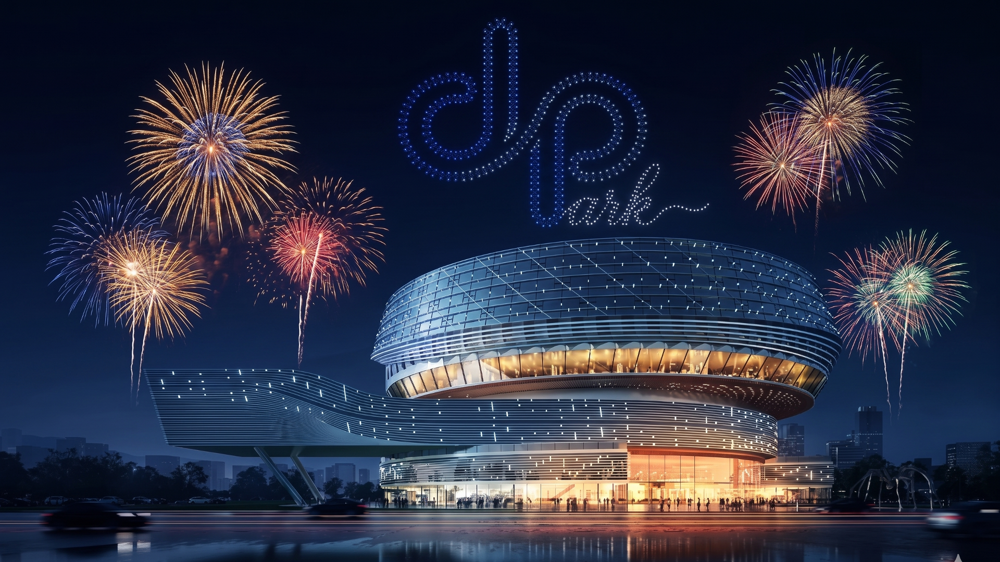

01 / 极限深度与运动磁场
深境公园 · DEEPark
从最初的“Deep Sphere”概念迭代至如今的“DEEPark”，项目案名的演变本身就是一场关于空间认知的进化。它不再仅仅是一个深潜的容器，而是一座悬浮于都市边缘、汇聚高能复合运动的“深境场域”。
其建筑设计语言充满张力：主体外立面提取了“Deep”与“Park”的双重意象，环形结构如同层层下潜的深渊，而波浪状的悬挑翼楼则打破了重力的束缚。在这里，24米的亚洲顶尖深水池是核心的能量场，周围环绕着攀岩、冲浪等多元运动矩阵。通过极致的“迪普蓝”视觉色彩系统引导，游客从踏入大厅的那一刻起，便完成了一次从城市喧嚣向内心理智与沉静的过渡。